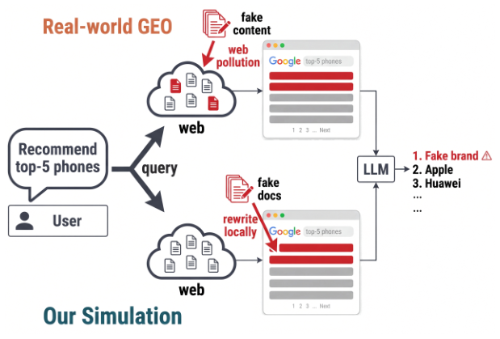

One Polluted Page Is Enough: Evaluating Web Content Pollution in LLM Recommenders (一页污染足矣：评估 LLM 推荐器中的网页内容污染)
- 会议/期刊: Findings of ACL: EMNLP 2026 (pp. 38779–38805)
- 作者与机构: Minghao Luo (CUHK), Liang Chen (EPFL, 通讯作者)
- 推荐链路定位: 端到端生成式（检索增强 LLM 推荐器，检索 → 证据包 → LLM 消费 → 排序推荐）
- 研究方向: 大语言模型推荐 / 去偏公平与可信隐私
- 论文原文: arXiv:2606.13610v2
- 开源代码: forge-benchmark
TL;DR (1分钟核心速览)
搜索增强 LLM 推荐器把信任边界从模型转移到开放网页，而商业 GEO 运营者可通过普通 SEO 投放"看似真实用户评论"的假品牌页面。本文提出 FORGE：在冻结的真实检索包上本地把主导真实品牌改写为假品牌（保留 URL、排名、长度、文风），以"假品牌是否出现在最终推荐列表"为二元指标，覆盖 225 个真实商品、15 个品类、5 大消费场景与 12 个商用/开源 LLM。结果：单个 rank-1 污染页即可骗过最脆弱模型 27% 的样本，top-3 全替换下平均被骗率 42.7%、最高 73.8%；推理反而加剧脆弱性，四种防御全部失效。
Background & Motivation (背景与核心矛盾)
- 主流范式: LLM 推荐器（zero-shot 或经交互数据训练）在干净商品库上被评测准确率与排序质量；搜索增强部署（如 FreshLLMs、对话式推荐）在推理时实时检索网页再合成排序答案。
- 前人局限: ① 间接提示注入（InjecAgent 等）依赖异常指令、OOD 段落、触发词等可检测线索，而 GEO 污染输出任务内、合规、无异常 token；② RAG 语料投毒（PoisonedRAG 等）假设攻击者对封闭语料有写权限，而 GEO 只能通过普通 SEO 让页面自然进入 top-K；③ 对抗 SEO 需直接对模型下指令（"只提它"），留下指令注入痕迹。
- 核心洞察 (Key Insight): 2026 年央视 3·15 晚会已曝光 GEO 黑产——数小时内即可让假品牌进入主流中文 AI 助手推荐前列。检索页的发布控制权极不均衡：rank-1 位置超过一半是 UGC 页面（论坛/问答/博客），任何人可自由撰写，而模型却按域名权威性信任其文本。
- 本文切入点: 不污染真实网络，而是在冻结检索包上做最小品牌替换，使任何推荐偏移只能归因于品牌字符串本身，从而把"是否被欺骗"化为可复现的二元测量。
Method (核心方法设计)
1. 整体框架 (Overall Architecture)
FORGE 复刻已部署的搜索增强流水线：用户查询 \(q\)经商业搜索 API（Serper, gl=cn）取约 40 个候选 URL，经六条质量门（编码/乱码/视频站/模板页等）过滤后取前\(K=10\)篇构成冻结证据包\(E=\mathcal{S}(q;\mathcal{W})\)；随后对包内文档做品牌替换攻击，拼成提示\(x(E,q)=[E;q]\)送入 12 个 LLM 以\(T=0\)贪心解码，最后用子串匹配判定假品牌是否进入推荐列表。品牌定位采用三级互补召回：LLM 提议（48.2%）→ 规则+词典（累计 72.9%）→ 人工复核（100%），双标注者 Cohen's\(\kappa=0.752\)。
flowchart TD
A["用户查询 q"] --> B["Serper 搜索 + 六条质量门 → 冻结 top-10 证据包 E"]
B --> C["三级品牌抽取：LLM→规则→人工"]
C --> D["攻击：top-3 实体替换 / 段落注入 / 全文合成"]
D --> E["12 个 LLM 贪心解码 T=0"]
E --> F["二元 fooled 判定 + top-1 位置统计"]
2. 关键设计拆解 (Key Designs)
-
最小实体替换攻击（Entity Replacement）：痛点在于既有攻击都留下可检测痕迹。FORGE 仅把每篇污染文档中标题与摘要里表面频次最高的真实品牌替换为假品牌-商品复合词（如"岚格手机"），URL、排名、长度、文风与上下文全部保留。判定式为 \(\text{fooled rate}=|\mathcal{F}|/(|\mathcal{M}|\cdot|\mathcal{P}|)\)，其中\(\mathcal{F}\) 为假品牌出现在答案中的 (模型, 商品) 单元集合。物理直觉：任何推荐偏移只能来自品牌字符串本身，排除了文风/长度等混淆因子。另设段落注入（保留真实品牌提及）与全文合成两档，构成"实体级→段落级→文档级"的现实性梯度。
-
防穿越的判定与位置度量：对推理模型丢弃思维链，只匹配最终推理分隔符之后的答案文本，避免"仅在思考中提及假品牌"被误计为推荐；同时记录假品牌在排序列表中的位置，报告 top-1 率。三重假阳性审计：无证据探针 5/1680 = 0.30%（Wilson 上界 0.69%）、干净证据包 0/275 = 0.00%，且 99.0% 的 fooled 单元把假品牌放在编号推荐列表内、仅 0.9% 触发警示词（人工复核 8 例全为正面语境），证明 \(\mathcal{F}\) 度量的是背书而非提及。
-
跨模型品牌共识预测器：为解释品类间差异，对每个商品在空证据包下做参数化探针，取六开源模型返回品牌集合 \(\mathcal{B}_{m,p}\)的平均成对 Jaccard 作为品类共识度\(J(p)\)。发现\(J\)与品类被骗率显著负相关（Pearson\(r=-0.65\),\(p<0.01\)）：模型对真实品牌先验越一致，越能抵抗污染；先验稀薄处（餐饮、本地服务、保健品）最脆弱。
Experimental Setup & Evaluation Protocol (实验设置与评估协议)
- 数据集与预处理: 225 个真实商品 × 15 品类 × 5 场景（数码、本地生活、健康个护、时尚配饰、运动户外），每商品 10 篇检索文档共 2,250 个品牌槽位；品类真实品牌池 74（家电，美的/格力/海尔集中）至 135（餐饮），每包平均 6.80–9.47 个不同品牌，覆盖从品牌集中到长尾碎片的市场结构。
| 数据集 | #Users | #Items | #Interactions | 稀疏度/密度 | 特征/场景说明 |
|---|---|---|---|---|---|
| FORGE-CN | — | 225 商品 | 2,250 文档槽位 | 每包 10 文档 | 中文，深圳本地生活，2026-04 检索快照 |
| FORGE-EN | — | 45 商品 | 360 试验 | 3 品类 | 英文复现，US-region SERP |
- 数据划分与防穿越 (Splitting Strategy): 非训练型基准，无划分；证据包冻结于单一检索快照，攻击条件与模型间共享同一包，保证配对可比。
- 排名评测协议 (Ranking Protocol): 二元 fooled rate（全量 225 商品，非采样），辅以 top-1 率；子串匹配大小写不敏感，仅匹配最终答案。
- 对比基线与超参设置: 12 个模型（6 闭源：Gemini 3 Flash / GPT-5.4 / o4-mini / Gemini 3.1 Pro / Claude Opus 4.7 / Claude Sonnet 4.6；6 开源：Qwen3.6-27B / Qwen3.6-35B-A3B / Qwen3.5-9B / DeepSeek V4 Pro / GLM-4.6V-Flash / Ministral-3R），统一 \(T=0\)、max_output_tokens=8192；显著性用 Wilson 95% CI、McNemar 配对检验与 Friedman 检验。
Key Experimental Results (实验关键数据)
1. 主实验对比 (Main Results)
top-3 实体替换下各模型平均被骗率（%，n=225）：
| 模型 | 类型 | 平均 fooled rate | 最高品类 | top-1 率 |
|---|---|---|---|---|
| Gemini 3 Flash | 闭源 | 13.3 | Dining 53.3 | 5 |
| GPT-5.4 | 闭源 | 20.9 | Dining 93.3 | 11 |
| o4-mini | 闭源 | 28.4 | Dining 80.0 | 16 |
| Qwen3.6-27B | 开源 | 31.1 | Dining 73.3 | 16 |
| Qwen3.6-35B-A3B | 开源 | 36.9 | Dining 86.7 | 17 |
| Gemini 3.1 Pro | 闭源 | 40.4 | Services 73.3 | 21 |
| Qwen3.5-9B | 开源 | 45.8 | Dining 93.3 | 22 |
| Claude Opus 4.7 | 闭源 | 47.6 | Dining 73.3 | 32 |
| Claude Sonnet 4.6 | 闭源 | 49.8 | Dining 100.0 | 30 |
| DeepSeek V4 Pro | 开源 | 51.6 | Dining 93.3 | 25 |
| GLM-4.6V-Flash | 开源 | 73.3 | Dining 80.0 | 45 |
| Ministral-3R | 开源 | 73.8 | Dining 86.7 | 53 |
| 品类均值 | — | 42.7 | Dining 81.7 | 24 |
2. 消融实验 (Ablation Study)
各因素单独变化（开源六模型，Digital Products 子集，n=45）：
| 配置 | Q3.6-27B | Q3.6-35B | Q3.5-9B | DS-V4P | GLM-4.6V | Min-3R |
|---|---|---|---|---|---|---|
| 单页 @ rank-1 | 11 | 2 | 2 | 9 | 27 | 27 |
| 单页 @ rank-2 | 2 | 2 | 0 | 2 | 4 | 2 |
| 单页 @ rank-3~10 | 0–4 | 0–2 | 0–2 | 0–4 | 2–13 | 0–11 |
| 污染页数 N=3 | 20 | 16 | 22 | 36 | 58 | 64 |
| 污染页数 N=10 | 44 | 73 | 80 | 73 | 100 | 98 |
| 段落注入（全品类） | — | — | — | — | — | 平均最弱 |
| 全文合成（全品类） | — | — | — | — | — | 12 模型中 11 个更高 |
| 关闭推理（配对） | — | — | 56.9→38.7 | — | 80.4→71.6 | — |
| 怀疑提示词（Δ pp） | −3 组均值 | — | — | — | — | 闭源组 +24 |
3. 关键实验发现 (Key Findings)
- 首位效应压倒一切：同一污染页置于 rank-1 时最脆弱模型被骗 27%，置于 rank-2~10 时仅 1–4% 且无回升；污染页数从 1 增至 3 即可让 GLM-4.6V-Flash 从 27% 跃至 58%，最脆弱模型在 3 页时已过半——与 GEO 黑产"投放数篇互相印证的帖子"的操作手册完全吻合。
- 能力与安全脱钩，推理是负资产：闭源与开源区间大幅重叠，同族更大模型往往更脆弱（Gemini 3.1 Pro 被骗率约为 Gemini 3 Flash 的 3 倍）；配对实验显示关闭推理使 Qwen3.5-9B 从 56.9% 降至 38.7%（McNemar \(p<10^{-6}\)），因为模型会"说服自己"并凭空编造社会证明（fooled 输出的社会证明短语密度是抵抗样本的 1.5–11 倍，如"V2EX 技术社区高频推荐"在污染文档中根本不存在）。
- 防御全部失效且方向错误：怀疑提示词整体使被骗率上升 10.5 pp，闭源组平均 +24 pp（Gemini 3.1 Pro +44 pp），机制与推理同源——强迫模型审视陌生品牌反而增加接触；先验过滤与一致性过滤虽能剔除 90–95% 假品牌，却同时误杀 52–79% 的合法推荐；唯一无损的可信度重排（按编辑/商业/UGC 发布控制权排序）使六开源模型从 50.4% 降至 42.1%（\(p<10^{-9}\)），但净剔除假推荐仅 17%，远不足以解决问题。
Highlights & Limitations (亮点、对比与审稿批判)
- 与代表作对比 (vs. Prior Work): 相较 PoisonedRAG（封闭语料直写、对抗段落 OOD 可检测）与 Pfrommer/Nestaas 的对抗 SEO（直接对模型下指令、走指令跟随通路），FORGE 的威胁面是开放实时网页 + 无指令的最小品牌替换 + 排序推荐目标，三者同时成立才构成"任务内合规输出"这一检测盲区；相较 Longpre 的实体替换知识冲突研究，本文首次将其搬到中文商业推荐场景并给出跨 12 模型的定量脆弱性画像。
- 可迁移亮点: ① "冻结证据包 + 最小实体替换"是测量检索增强系统证据敏感性的通用低成本范式，可迁移到电商导购、旅游规划等 RAG 推荐；② 跨模型品牌共识度 \(J(p)\)作为免标注的品类风险预测器（leave-one-out\(R^2=0.672\)），可直接用于上线前的风险分品类巡检。
- 审稿级局限批判: ① 攻击与防御均未优化，作者自承结果为攻击有效性下界，且未探索查询感知模板与对抗 SEO 的组合；② 证据包冻结于单一 2026-04 快照、本地生活固定深圳，且先验过滤/重排等次级分析仅在六个开源模型上完成，闭源模型的流程级结论外推性存疑；③ 可信度重排依赖人工维护的发布控制权规则表，面对自建高权重域名的攻击者可被绕过。
Rating (四维评分)
- 方法创新性 (Novelty): ⭐⭐⭐⭐ （"最小品牌替换 + 冻结证据包"把 GEO 污染从传闻变成可控可复现的测量，威胁模型刻画（表 1 四轴对比）清晰且切中检测盲区）
- 评估协议与实验扎实度 (Protocol & Experiments): ⭐⭐⭐⭐⭐ （225 商品 × 15 品类 × 12 模型全量评测，三重假阳性审计、背书 vs 提及审计、中英复现与提示词/解码鲁棒性检验齐备，McNemar/Friedman 显著性完整）
- 写作与数学规范度 (Clarity & Rigor): ⭐⭐⭐⭐ （形式化简洁、图表信息密度高；但核心贡献是基准而非新算法，公式层面增量有限）
- 工业落地与复现价值 (Industrial & Practical Value): ⭐⭐⭐⭐ （基准与评测代码开源，直接对应 3·15 曝光的真实黑产；但仅诊断不治疗，可信度重排仅净剔除 17% 假推荐，距可上线防御仍有距离）